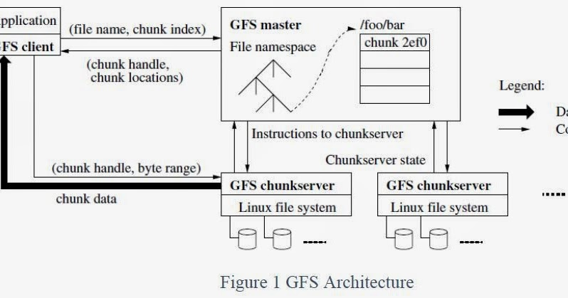
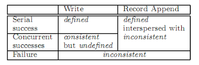
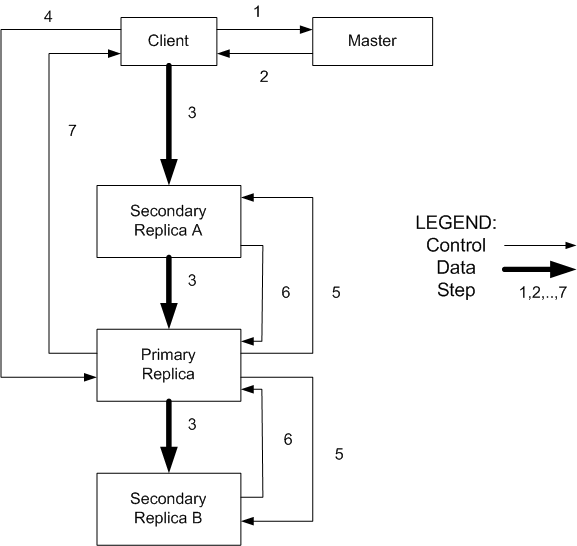

Gfs Paper Notes
The Google File System
Different point against traditional distributed file system
- component failures is normal
- files are huge
- most files are mutated by appending new data rather than overwriting
- flexibale API
Assumptions for design overview
- often fail
- large files
- workloads
- large streaming reads
- small random reads
- large, sequential writes
- modify is rare
- semantics for multiple clients concurrently append
- High bandwith than low latency
API
- usual operation
- snapshot
- COW
- record append
Architecture
- single master, multiple chunkservers accessed by multiple clients
- files are divided into fixed-size chunks, identified by an unique
chunk handle, alsoreplicated- Chunk size: 64MB
- master maintaains all file system metadata
- namespace
- access control information
- mapping from files to chunks
- current location of chunks
- chunk lease management
- gc
- chunk migration
- Heart beats with chunkservers
- Not POSIX API
- master just transmit metadata, all data-bearing communication goes to chunkservers
- No cache for file data

Metadata in master
- Three major type
- namespace(persisted, replicated)
- mapping from files to chunks(persisted, replicated)
- location of each chun\’s replicas(ask for information)
- All in memory
- chunk location
- poll at start
Operation log
Consistency Model

implicaiton for application level
- atomically rename
- checkpoint
- checksum and unqiue identifier for padding and rare depulication
Leases
- primary, one of the replications

Atomic Record Appends
- successful record append is defined while intervening regions are undefined
Master Operation
- Namespace and locking if it involves d1/d2…/dn/leaf, it will acquire read-locks on the
directory names /d1, /d1/d2, …, d1/d2…/dn, and either a read lockor a write lockon the full pathname d1/d2…/dn/leaf
allows concurrent mutations in the same directory, multiple file creations can be executed concurrently in the same directory: each acquires a read lockon the directory name and a write lockon the file name
- replica Plcaement
- Creation, re-replica, rebalancing
- limit the number of “recent” creations on each chunkserver
- place new replicas on chunkservers with below-average diskspace utilization
- spread replicas of a chunkacross racks
- GC
- master logs the deletion
- file is just renamed to a hidden name that includes the deletion timestamp
- During the master’s regular scan of the file system namespace, it removes any such hidden files if they have existed for more than three days
fault tolerent
- fast recovery
- master/chunk replications
- master shadow replica
- checksum for broken chunk